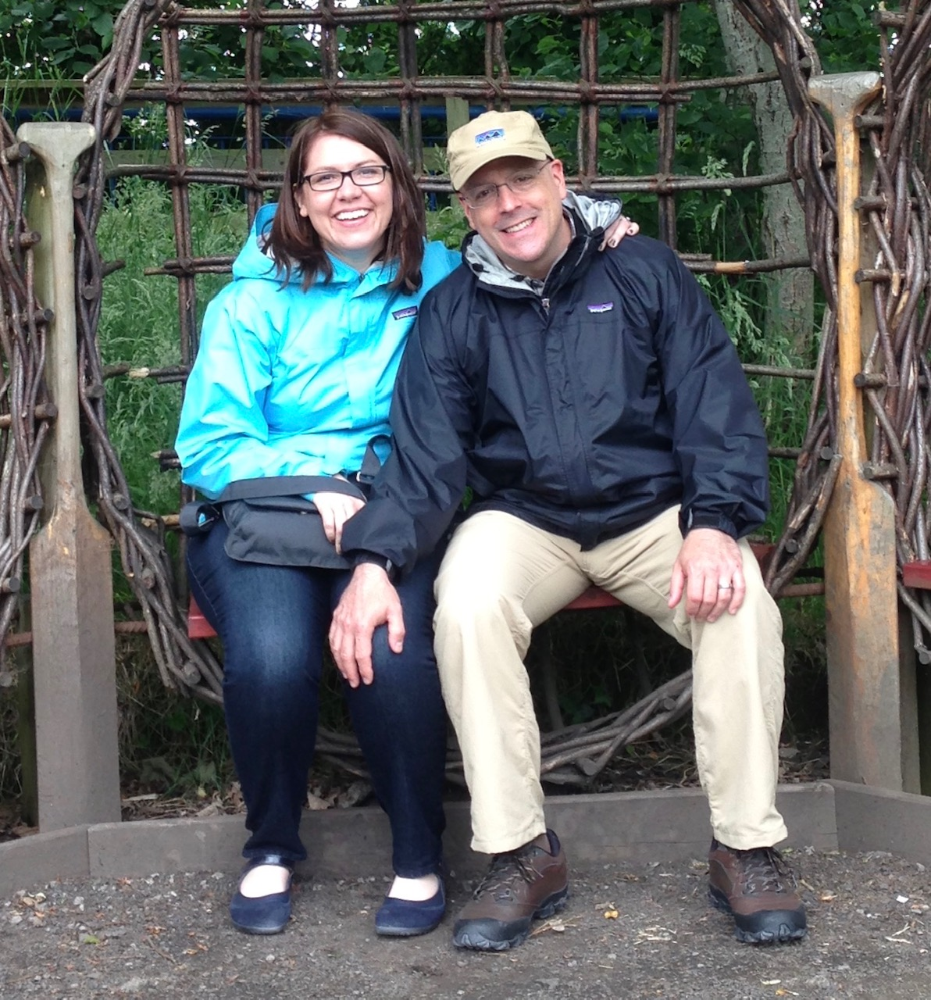
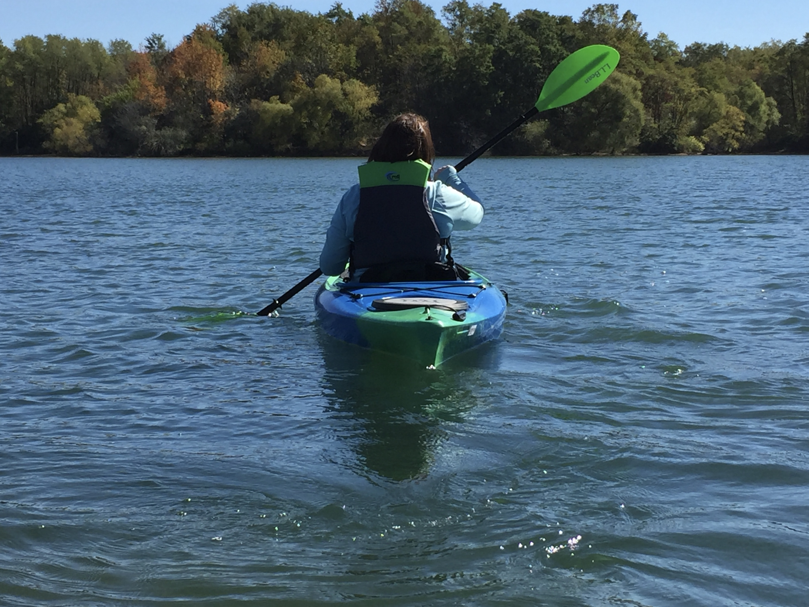

Originally from Dayton, Ohio, I earned my undergraduate degree at the Ohio State University and stayed in Columbus, Ohio for about 10 years. I worked in banking during this time; managing bank branches and I also did commercial lending for a bit. I then decided to pursue a life-long goal and join the Peace Corps. I ended up serving a little over two years in Guatemala, as a small business advisor to a local women's association as my main project. I made lifelong friends, learned a lot about international development, and gained a much deeper appreciation for all we have in our country (and hopefully I made a little difference in my town too)! While in Guatemala, I enrolled in graduate school at Indiana University in Bloomington and came back to the US about a month and a half before school started. My area of study was Public Affairs, with concentrations in nonprofit management and public management. After graduating, I secured a job at the state and worked my way up through a couple of agencies until my last role as the Director of Policy for the Department of Workforce Development. There I learned about government programs, policies, and how services funded by federal and state sources are used to serve citizens in different ways. The incremental pace of government was difficult for me to adjust to, however, so three years ago I decided to return to the private sector and joined a consulting firm that specializes in workforce development, building off of my experience at the state. I have been fortunate to work alongside the President/CEO who has served as a mentor to me, and allowed me to get creative about how I approach my projects and develop solutions for clients. Partnering with Eleven Fifty Academy through my consulting work, I learned how coding could enhance my career, not only on my resume, but through developing applications and tools that support my current work. For example, I could possibly help my current employer manage projects internally in a more effective way, or using these skills externally, I could seek ways to broaden access to workforce training and services for those in need. I continue to learn so much in my current position and love the work I do, but I have become passionate about coding and the possibilities I can explore with these skills. I am eager to see what the next phase of my career grows into!
 My husband and I have two cats: Lou & Ella. We live in downtown Indianapolis and love kayaking in our spare time.